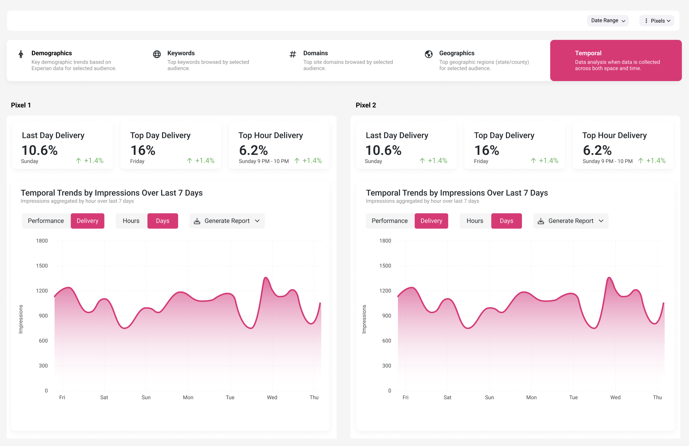
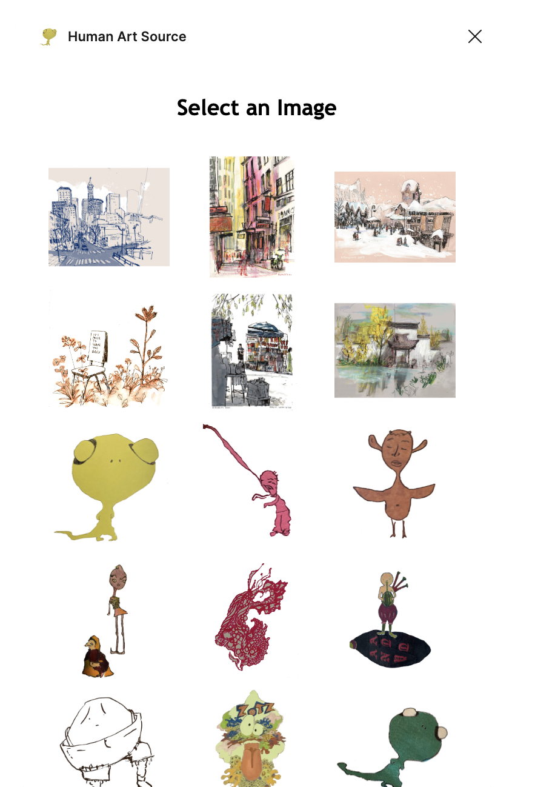
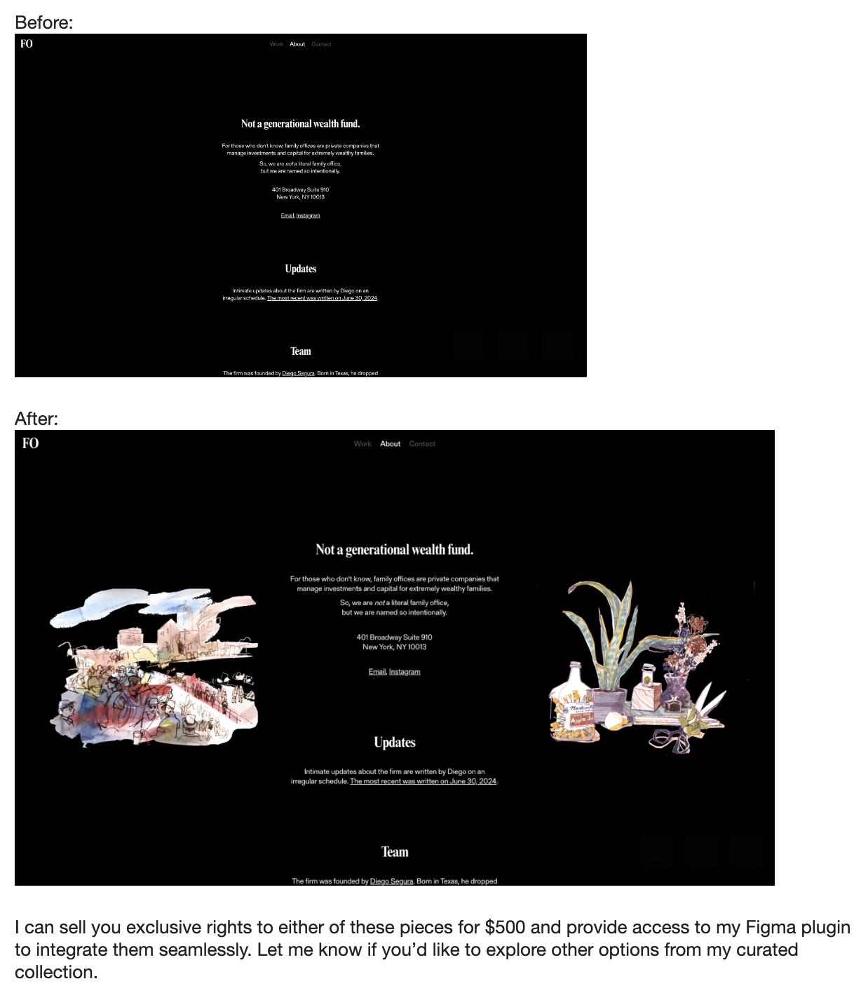

INSIGHT SUITE REDESIGN
As a sales representative at an AI startup, I observed frustration coming from my clients and colleagues in client success about our insight suite which they were the daily users of. I became curious and decided to dig deeper to find the root of their frustration and see if I could find any way to quell it.
Our insight suite was not our primary offering and thus collecting and processing user feedback related to its user experience was not a priority for the product team. Although my job was to make sales, I found myself most interested in the design of our product. I thought a better product would yield more sales. I asked the product team if I could help. I was met with confusion as to why a sales rep wanted to do a design project. But by acknowledging my unorthodox perspective (closeness to clients) and desire to improve my design skills, I convinced my colleagues in product to let me do an unofficial project.
BEFORE
Through my interviews I found…
1) Clients and client success managers were having trouble understanding data because the UI only offered one very broad time range.
2) There wasn’t any way to view data from more granular DMAs, they needed this information when working on campaigns that were concentrated in certain metro areas.
3) When comparing data from multiple pixel sources, they had to painstakingly navigate back and forth.
PROPOSED FEATURES
I synthesized the information from my interviews and made a priority list of features that needed to be built:
1) A DMAs feature
2) A pixel comparison view
3) A date picker
I explored possibilities for how these features could be designed and proposed them to the product team.
WIREFRAMES


AFTER
I prototyped the designs in Figma:

I had lots of fun learning how to prototype functional buttons:
RESULT
The product team preferred my designs to what we already had and implemented my changes into the next version of the product. We didn’t do a quantitative survey on user satisfaction, but I received qualitative positive remarks from all of the users I interviewed once the changes were made.
Because of my research into these client dissatisfactions and the opporotunities I showed for innovation in this area, the product team decided to do a larger project to overhaul the insights suite as one of their OKRs for the next quarter.
FIGMA PLUGIN
I believe that in our increasingly AI empowered future, human art will be valued at a premium. You can read my further thoughts on this here:
Inspired by
1) these thoughts above,
2) my friendships with artists who had never monetized their prolific portfolios and a years long desire to do this for them,
3) my observations working in tech startups, seeing that graphics chosen for implementation into products often lacked originality and personality,
I went on a journey toA) improve the quality of fine art used in apps, software, and websites.
B) increase convenience of sourcing unique, human-made art for designers and developers.
RESEARCH
I interviewed over 50 product designers to understand where they are sourcing pieces of art for their tech products and why they choose the art that they do. Some cited copyright free image libraries such as Unsplash or Figma plugins like Humaans and Blush. Some designers working at larger companies told me that their brand teams have a library of assets that they can plug and play with. Some go to a graphic designer on their team. Some commission an artist on Fiverr, Upwork, or Dribble. Some free-lance designers refer their clients to an artist friend. Some play around with AI generated illustrations. It seems that there are many different routes through which this art is sourced. But most designers I talked to agreed that the process of finding and putting good art into a tech product is a painstaking, inefficient, and expensive process.
Another insight from these interviews: product designers don’t typically have the authority to spontaneously choose a piece of unique art to include in their companies’s product. A decision like this would probably be made by the founder on a small team or a branding team/ agency in a larger company. With this information I pivoted from building a marketplace for designers to pick, purchase, and implement artwork to a manual sales process of placing pieces of art with founders and branding agencies. I decided that a Figma plugin was the simplest way to get the art to my customers and accept payment. In the case that I made a sale, I could direct my customer to the plugin and they could have their art in a few clicks. So I set about developing a Figma plugin.
DEVELOPMENT
With lots of trial and error, I designed, coded, and published my first Figma plugin: Human Art Source.

Upon running the plugin, users can browse art. When they click on a piece, it is inserted into their canvas at 50% opacity so that they can test how it will look with their design. If they decide to purchase the piece they will be prompted to complete payment. If payment is successful, the art in their canvas will change to 100% opacity.
I have partnerships with 8 artists who have signed contracts relinquishing ownership over their art to buyers upon purchase in exchange for 50% of the sale price. This means that anyone who buys art through this plugin has exclusive rights to use their new piece of art commercially or however they may like!
SALES & BRANDING
I wanted to start trying to sell the art to see if this is even something people would want/ buy. I named the project Postscript (after the post-text internet that I believe will be the internet of the future) and quickly created a landing page.
I set up a sales process and made mockups of what websites or apps could look like if they included a piece of unique art.

ONGOING
I am currently running this sales process to gague if there is any interest.
Through this project I have already learned so much information that was not in my brain before and met so many people that were not in my world before.
Postscript is an ongoing project...